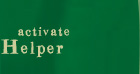
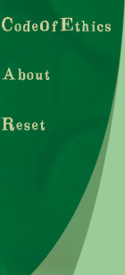
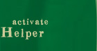
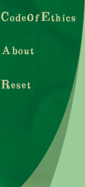

Previous situation: The project deadline was near and a bug was detected in the system. You were unable to remove the bug and complete the system on time.
Your choice: You chose to submit the propject as is and inform HeWell Alliance of the system's complications.
The project deadline has been reached and you have not been able to remove the only known bug from the system. You have a meeting with the HeWell’s upper management and inform them that the system is completed and works exactly as planned except for the one glitch. You explain in detail what errors are generated by the problem and what progress you have made in attempting to rectify the situation. HeWell informs you that they will take one week to explore their options and encourages you to keep working to solve the problem. At the end of the week HeWell meets with you again and requests to know what you think should be done in this situation. They have decided to follow your advice since you know more about the software and the problem than anyone else. They feel that you have a better feel for the extent of the damage, if any, that could be caused by the error in the software.
Postpone system and try to remove bugs
Inform that bug is not really a big deal, no need to worry about it, do not work on patch